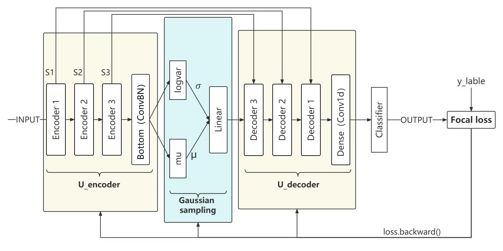
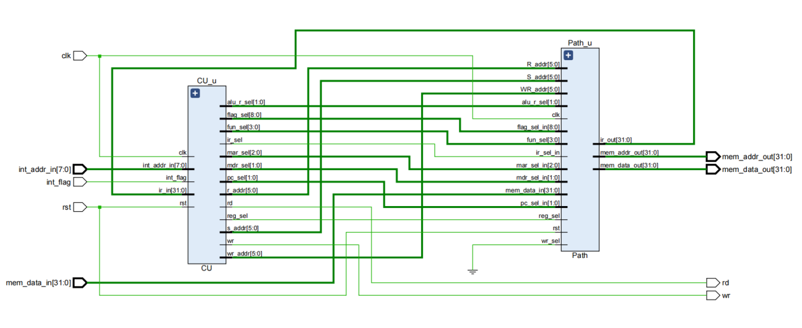
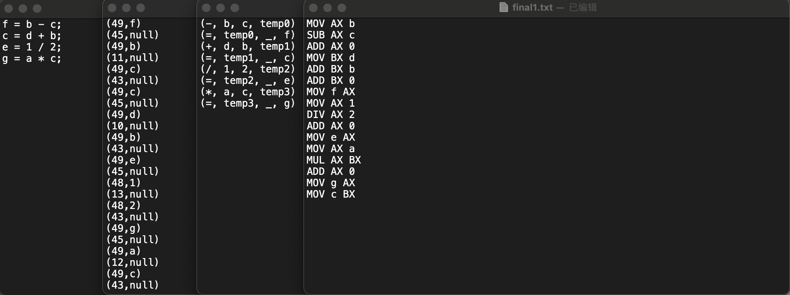

|
Dengjia Zhang 「张登甲」
I'm a junior undergraduate student majoring in Computer Science at Beijing Jiao Tong University. I am currently doing research in computer vision. My research interests lies at Computer Vision, Meta-Learning, Optimization, Machine Learning and Computer Network.
Besides research, I am also interested in speculative fictions and scientific fictions. Speculative fictions make my mind more active. Meanwhile, science fictions can make my mind more open.
Email /
CV /
GitHub
|

|

|
Unsupervised Depth Estimation in Light Field
The baseline is
Attention-based View Selection Networks for Light-field Disparity Estimation
Evaluated and experimented with an Attention-based View Selection Networks for light field disparity estimation and confirmed its weak performance in non-textured and occluded areas.
Developed occlusion aware module and smooth loss that improved performance as confirmed by ablation experiment.
Used Python and PyTorch to build models and visualize results, reducing the mean squared error by 50%.
|

|
Few-Shot Semantic Segmentation Method
The baseline is
Few-Shot Segmentation via Cycle-Consistent Transformer
The main goal is to develop a more precise semantic segmentation model through small sample sizes.
Used Cyc-Consistent model as baseline and explored different approaches such as taking top k most similar points.
Increased the MIoU by 0.5 as compared to the baseline in the first three fold of cross validation.
|
|

|
Physiological Signal Classification Based on Confidence Calibration
The baseline is
U-Time: A Fully Convolutional Network for Time Series Segmentation Applied to Sleep Staging
Experimented with U-Sleep model as the baseline to improve the performance of sleep signal classification.
Developed Gaussian Sampling to baseline to improve the robustness of the model and used Focal Loss to address the gross imbalance between positive and negative samples.
Chose Expected Calibration Error (ECE) as a more reliable metric and reduced the ECE by 70% as compared to the baseline model.
|

|
VOStyle
[Code]
Developed a UI interface for video-level semantic segmentation in the project which allows users to segment
not only images but also videos.
To segment a video, users only need to select the object to be segmented in the first frame, and the network
will use the AOT model to segment the object in the entire video.
|

|
Depth Estimation Based on YOLO
[Code]
The entire framework is based on YOLO, which can recognize cars, trucks, buses, and humans, while maintaining a high level of accuracy.
As it is a monocular depth estimating system, corresponding camera parameters need to be adjusted for the specific camera. Then distance information can be obtained through calculation. Additionally, it can also roughly determine the direction of the target (left, right, or directly in front).
|
|

|
Simple CPU Design Based on VHDL Language
Successfully simulated and designed a small CPU based on the RISC-V instruction set architecture using
VHDL language in the first half of 2022
The CPU was capable of basic logical operations and was used to compute the 64th number in the Fibonacci
sequence, validating its functionality
|
|

|
Simple Compiler Based on C++ Language
[Code]
The project is completely based on c++ language. The input c++ code text can be converted into machine language output.
At the same time, the project includes various grammatical analysis and grammatical-guided translation in compilation.
|
|
Awards
Beijing Jiao Tong University First-Level Academic Scholarship (top 3%, 2021)
Beijing Jiao Tong University Second-Level Academic Scholarship (top 10%, 2022)
Honorable Mention in Interdisciplinary Contest in Modeling (top 15% 2023)
1st Prize in China Undergraduate Statistical Modeling Contest
2nd Prize in China Undergraduate Mathematical Contest in Modeling
2nd Prize in ’Challenge Cup’ Business Plan Winter Olympics Competition
3rd Prize in Blue Bridge Cup Competition, Beijing Division
1st Prize in Beijing Jiao Tong University Blue Bridge Cup Competition
2nd Prize in Beijing Jiao Tong University Mathematical Contest in Modeling
3rd Prize in Beijing Jiao Tong University Programming Competition
|
© Dengjia Zhang | Last update: Apr. 25, 2023
|